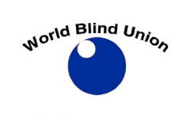
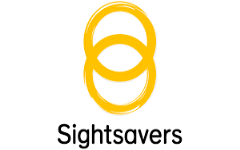

Information
A list of organizations and foundations working for the visually impaired and visually impaired, and information about their activities
1. World Blind Union(WBU)
-
The world Blind Union(WBU) is the international organization representing
the estimated 253 million people who are blind or partially sighted. -

Vision
① That WBU is recognized as the authentic voice representing blind and partially sighted
persons at the international level
② That our members at all levels have the capacity and capability to deliver their programs
③ That Blind and partially Sighted Persons live in a world that is increasingly accessible to us
④ That the WBU is recognized as an international source of information in matters related
to vision impairment
persons at the international level
② That our members at all levels have the capacity and capability to deliver their programs
③ That Blind and partially Sighted Persons live in a world that is increasingly accessible to us
④ That the WBU is recognized as an international source of information in matters related
to vision impairment
Work
- They are focused on promoting full participation, equal opportunities, and protecting the
human rights of blind and partially sighted persons in all aspects of social, economic, political
and cultural life.
- Working towards a world that is increasingly accessible to persons who are blind or partially
sighted.
- They promote employment opportunities for persons who are blind or partially sighted,
particularly through their Project Aspiro
- They provide scholarships to students from developing countrie to enhance braille literacy
and lifelong learning.
human rights of blind and partially sighted persons in all aspects of social, economic, political
and cultural life.
- Working towards a world that is increasingly accessible to persons who are blind or partially
sighted.
- They promote employment opportunities for persons who are blind or partially sighted,
particularly through their Project Aspiro
- They provide scholarships to students from developing countrie to enhance braille literacy
and lifelong learning.
2. European Blind Union(EBU)
-
EBU works towards an accessible and inclusive society with equal
opportunities for blind and partially sighted people to fully participate in
all aspects of social, economic, cultural and political life. -

Work
① Creative Europe/Media funding to the film industry
- Creative Europe Program and annual work programs include audio description and audiosubtitling among the selection and award criteria for MEDIA funding, and at least 25% of
films that receive MEDIA production or distribution funding have an audio description and
audio subtitling in the languages of the production.
② The Marrakesh treaty
- To facilitate access to published works for persons who are blind, visually impaired orotherwise print disabled
- Currently, copyright law is a national jurisdiction which has the effect of preventing blind
organizations from sharing books with neighboring countries, thus causing considerable
unnecessary duplication of production of books in accessible formats. The treaty will
considerably increase the availability of accessible books all over the world and support the
mitigation of the predominant book famine.
③ Awareness-raising on blind and partially sighted person’s rights
- PARVIS (Promoting Awareness on the Rights of Visually Disabled People in an Inclusive Society)raises awareness of blind and partially-sighted persons rights, while building visual impairment
organization‘s capacities to advocate for them, through the creation and provision of accessible
audiovisual communication material, harmonized at the European level.
④ Braille promotion
- EBU promotes braille and braille literacy as essential tools for the autonomy of blind andpartially sighted individuals. In 2022 EBU produced a Statement on Access to Reading and Using
Braille clearly outlining their position.
⑤ The EBU livingbraille forum
- EBU has launched a new online platform for information, exchange and discussion about allBraille related topics.
3. Sightsavers
-
Sightsavers is an international non-governmental organization
that works with partners in developing countries to treat and prevent
avoidable blindness, and promote equality for people with visual impairments
and other dis. -

Work
- Between 1950 and 2018, Sightsavers had distributed over 1 billion treatments to prevent
potentially debilitating diseases and supported 7.3 million sight-restoring cataract operations.
- Sightsavers supporting people with disabilities to find work and earn a living.
- Protect sight and change lives by treating and preventing a range of eye conditions, from
refractive error to trachoma.
- Campaign for the rights of people with disabilities to participate equally in society, leaving
no one behind.
- The right of people with disabilities to take part in decision-making at all levels, including
in the electoral process, is critical if they are to influence policies that affect their lives.
potentially debilitating diseases and supported 7.3 million sight-restoring cataract operations.
- Sightsavers supporting people with disabilities to find work and earn a living.
- Protect sight and change lives by treating and preventing a range of eye conditions, from
refractive error to trachoma.
- Campaign for the rights of people with disabilities to participate equally in society, leaving
no one behind.
- The right of people with disabilities to take part in decision-making at all levels, including
in the electoral process, is critical if they are to influence policies that affect their lives.
Addr. #99 Vazha-Pshavela Avenue, 0186, Tbilisi, Georgia
Addr. ვაჟა-ფშაველას გამზირი 99, 0182 Tbilisi, Georgia
Tel. +995 577 15 70 21
IAC KOREA
Addr. ვაჟა-ფშაველას გამზირი 99, 0182 Tbilisi, Georgia
Tel. +995 577 15 70 21